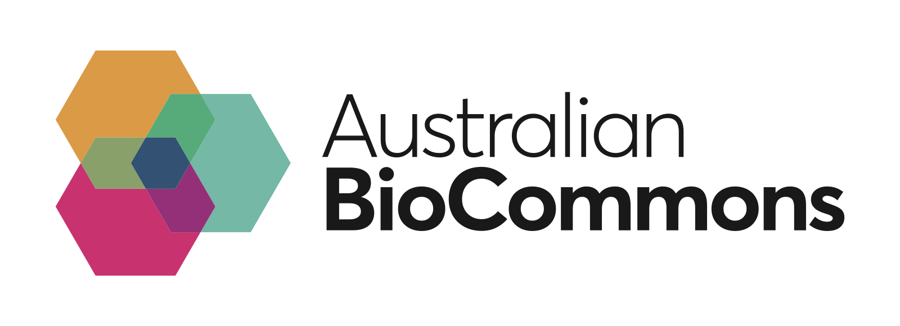
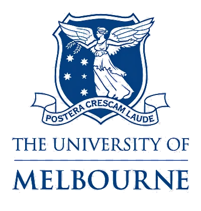

Project objective
To provide user-friendly access to high impact computational structural biology workflows on Australian HPC infrastructure.
Key product features
- The SBP will allow users to run workflows by populating a web form and hitting submit (with no additional setup or configuration).
- The SBP will support 3 initial pre-configured workflows:
-
Single structure prediction
- One AlphaFold2 generation model (AlphaFold2)
- One AlphaFold3 generation model (Boltz)
-
Protein interaction screening
- One AlphaFold2 generation model (AlphaFold2)
- One AlphaFold3 generation model (Boltz)
-
Hotspot-guided protein binder design
- BindCraft
- RFDiffusion > ProteinMPNN > AlphaFold2
- Users will be able to login to the platform and execute workflows on Australian HPC infrastructure.
- Users will be able to login to the platform and browse historical jobs submitted by their platform user account.
- Each workflow result will display an interactive HTML report that is visible from within the platform.
- Users will be able to download raw data files directly from the platform.
- User result data will not be visible to other platform users.
Additional context
- Academics within the community are accustomed to extremely user-friendly web interfaces available for small-scale analyses using existing free/cheap web services (alphafoldserver, colabfold, neurosnap). Note: A user-friendly interface has been a recurring theme across many user interviews.
-
There is a high level of immediate demand for access to workflows
under 2 themes (structure prediction, protein design) which are not
well accommodated by existing web services:
- Protein binder design
-
Bulk structure prediction
- Predicting structures for an entire genome
- Screening 1 protein for potential partners in an entire genome
The current approach to conduct these analyses may involve manually submitting thousands of individual jobs to a public web service.
Partners

